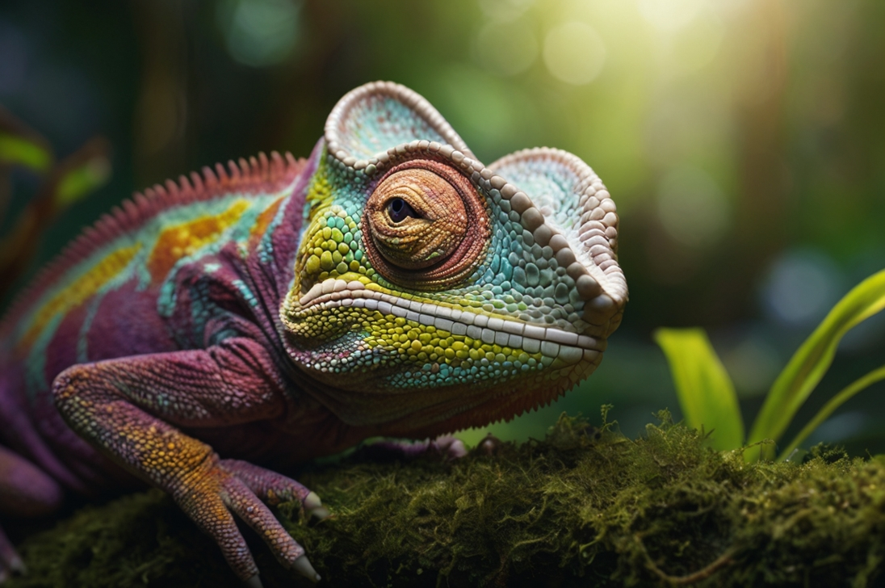

Chameleon
„Pozorovatel barevného světa“

🧠 „Mění barvy, ale ne názor.“
- Povaha: Tichý, citlivý, přizpůsobivý
- Bydliště: Terárium mezi listy
- Oblíbená činnost: Skrývání a pozorování světa
Někdy ho nevidíš vůbec. A přitom tam je. Sleduje tě, mění barvy podle nálady a nikdy neřekne první slovo. Ale když ho necháš chvíli tiše dýchat, ukáže ti barvu, o které jsi nevěděl, že ji máš i ty.